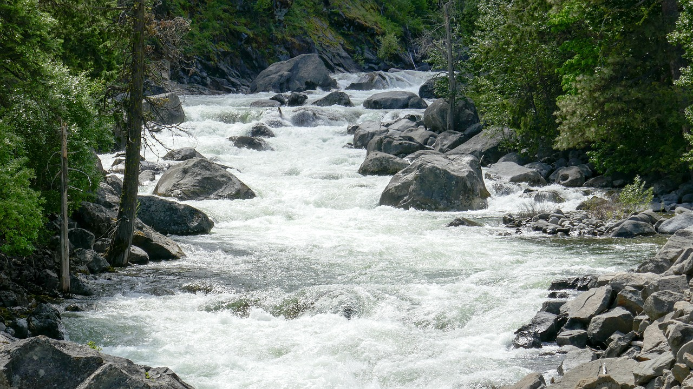

Frequently Asked Questions
Scroll down below to see our selection
Rivers
This page is to give information about rivers that the company runs.
Main Fork of the Salmon
River, Idaho
Nestled deep in the Frank Church Wilderness of No Return winds the Salmon river. The Salmon was given the nickname long ago as the River of No Return by the people living near it because of the number of folks that came to visit and fell so in love with the rugged beauty of the river that they never left.
Herds of elk and deer graze on the hillsides around the river and bear and bighorn sheep are also commonly sighted. The river corridor is also lined with awe-inspiring ponderosa pine which tower over the sandy beaches in the campsites and provide shelter from sun or rain when needed.
Let's not forget the rapids! They range from class I-IV. The Salmon is one of the longest undammed rivers in the United States. As a free-flowing river, the water is higher, faster, and colder in the early summer and lower, slower, and warmer in the late summer. There are good rapids all summer...but families with children who like to swim tend to appreciate the late summer's slower, warmer water more.
Desolation and Gray Canyon, Utah
Winding through canyons in central Utah, in some of the most desolate land anywhere, the Green river flows towards the mighty Colorado river and the sea. High grey stone cliffs, beautiful desert scenery, and great rapids have made this run famous. This 84-mile trip runs from Sand Wash to Swaseys Rapid (just outside Green River, Utah) and boasts outstanding scenery, interesting geologic formations, evidence of prehistoric and historic human activity, and great whitewater opportunities.
Desolation is rated a Class II/III and is usually done in 6 days.
Desolation Canyon has been recognized as a National Landmark. This designation is based on the uniqueness and rich history that the canyon tells.
Grand Canyon, Arizona
This is the granddaddy of all canyons and the granddaddy of all river trips. You will never forget your visit to the Grand Canyon.
Grand Canyon river rafting combines world-class whitewater with breathtaking scenery to make one truly unforgettable river experience. The canyon is filled not only with exhilarating whitewater rapids, but with side canyons and ancient Indian ruins accessible only by river.
CLASS I - X: The Grand Canyon uses a unique river rating scale. The rapids in the Canyon are technically rated I - X (1 - 10) to accommodate such a wide variety of rapids and river variances. However, most people are familiar with the regular I - V river rating scale, so we often refer to both.
FAQ
This is a place to answer frequently asked client questions.
Is this a good trip for kids? What are the age ranges you allow?
Absolutely, this is a good trip for children of all ages. We have found, however, that children over the age of 8 seem to enjoy it more overall (And parents especially enjoy it more if their children are all over 8). A common concern we get from parents is that their children will be bored stuck on a boat for hours at a time. Surprisingly we deal with very few bored children of any age. The areas we are rafting through are some of the most beautiful in the world, and you never know what you might see around any corner. Not to mention the rapids which keep things very interesting. Each boat also comes equipped with a guide. It has been proven that river guides are unable to go for very long at all without telling stories...some of which are even true!